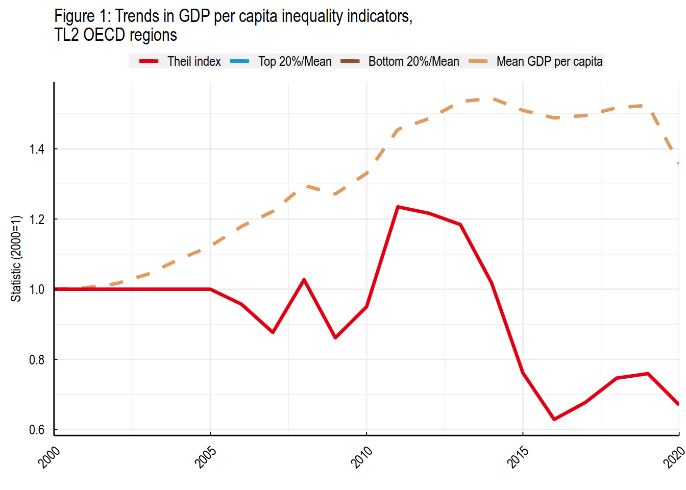
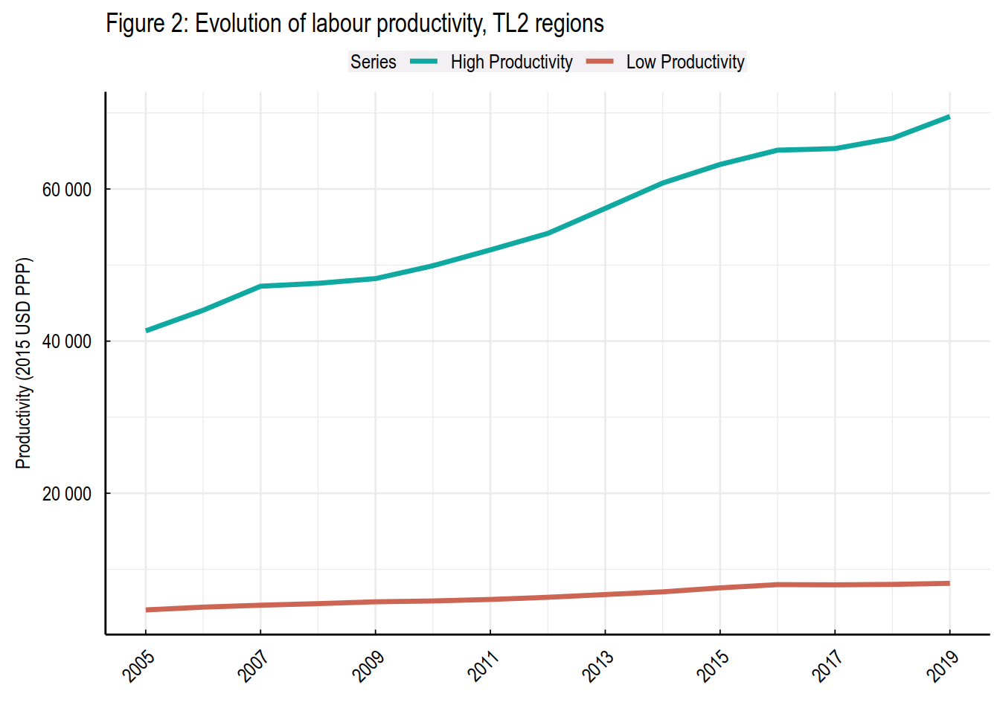

| Population and territory | 52.156.254 (2023), 1.136.616,142 Km2 |
|---|---|
| Administrative structure | Unitary country |
| Regional or state-level governments | 32 departments and Bogotá (capital district) |
| Intermediate-level governments | -- |
| Municipal-level governments | 1.121 (1.102 municipalities, 18 non-municipalised areas, 1 island) |
| Share of subnational government in total expenditure/revenues (2021) | 33.2% of total expenditure 42.9% of total revenues [Source: Subnational governments in OECD countries: key data, 2023 edition] |
| Key regional development challenges |
|
| Objectives of regional policy |
|
| Legal/institutional framework for regional policy |
|
| Budget allocated to regional development (i.e., amount) and fiscal equalisation mechanisms between jurisdictions (if any) |
|
| National regional development policy framework |
|
| Urban policy framework |
|
| Rural policy framework | |
| Major regional policy tools (e.g., funds, plans, policy initiatives, institutional agreements, etc.) |
|
| Policy co-ordination tools at national level |
|
| Multi-level governance mechanisms between national and subnational levels (e.g., institutional agreements, Committees, etc.) |
|
| Policy co-ordination tools at regional level |
|
| Evaluation and monitoring tools |
|
| Future orientations of regional policy |
|
Colombia
|
OECD Regional Outlook The OECD Regional Outlook reviews recent trends, policy developments, and prospects across OECD regions, including the underlying causes driving regional inequalities in performance and well-being. The report offers evidence, guidance and policy recommendations on how to improve competitiveness and productivity, promote inclusive growth, accelerate the net-zero transition and raise well-being standards through effective regional development policy and multi-level governance. |
|
Territorial definitions The data in this note reflect different sub-national geographic levels in OECD countries:
In addition, some indicators use the degree of urbanisation classification (OECD et al. 2021), which defines three types of areas:
Disclaimer: https://oecdcode.org/disclaimers/territories.html |
Overview
Regional inequality trends
Colombia experienced a decline in the Theil index of GDP per capita over 2000-2020. Inequality reached its maximum in 2011.
Polarisation, as measured by the Top 20%/Mean ratio was NA NA in 2000 compared to 2020. Bottom divergence, as measured by the Bottom 20%/Mean ratio was NA NA in the same period.

Note: Based on 1 586 TL3 regions in 27 countries with available data (no TL3 data (continuous time series for more than 1 region) for Australia, Canada, Chile, Colombia, Costa Rica, Iceland, Ireland, Israel, Mexico, Luxembourg and Switzerland). Between Theil measures the dissimilarity of the national GDP per capita means with respect to the OECD average. Within Theil measures the dissimilarity between regional and national GDP per capita.
Source: OECD Regional Database (2022).
In Colombia, labour productivity in high-productivity regions grew by 68.17% between 2005 and 2019, 6.83 percentage points less compared to low-productivity regions.

Note: Labour productivity for high productivity (low productivity) regions is equal to the sum of Gross Value Added across high productivity (low productivity) regions in a country/year divided by the sum of Employment across high productivity (low productivity) regions in a country/year. Gross Value Added is expressed in USD 2015 PPP. Regions are at the TL2 level for Australia, Canada, Chile, Colombia, Ireland, Mexico, Norway, Switzerland, Turkey and the United States. A region is defined as high productivity if its productivity was equal or above the country median for at least two years out of the first four years of each region’ observation period, and low productivity otherwise. The starting year is the first available year for each country.
Source: OECD Regional Database (2022).
Recent policy developments
Colombia’s National Development Plan 2022-2026 includes measures and actions aimed to transform and strengthen the technical capacity of subnational governments. In particular, the National government wants to develop a model of differential decentralization that allows the promotion of territorial autonomy. Also, it seeks to advance in a policy to build and improve territorial planning from a new management approach under the following principles: i) protection of water and environmental justice, ii) Human security and social justice, iii) the right to food, iv) productive transformation and climate action, and v) regional convergence
To promote strategic investment projects, the government will aim to align the general budget of the nation, intergovernmental grant system, and the general system of royalties. In this way, the National government will prioritise historically marginalised territories, the municipalities with high levels of informality and of rurality, and allows the full enjoyment of rights of the inhabitants in each of the territories.
In addition to the above, several policies and governance mechanisms have already been implemented in the last two decades to promote and address regional capacities and local development. For instance, the promotion of local and regional association initiatives, policy frameworks to promote national cities development (such as Sistema de Ciudades), the regulation of multipurpose cadastre orientated to promote local development and to endorse economic benefits from land use exploitation.
Colombia's Decentralisation Mission, established in 2021, is working to propose reforms to promote subnational development and reduce regional inequality. The mission's key areas of focus include:
Competencies throughout government levels
Sources and uses of revenues for local development
Institutional architecture and modernization of public administration
Open government and citizen participation
Decentralisation and indigenous territories
Also, since the signing of the peace agreement, Colombia has been implementing rural development policies through the Development Programs with a Territorial Focus (PDET) and advancing towards comprehensive rural reform and the strengthening of agricultural policies (Ley 2183 de 2022).
Finally, Colombia has worked to promote and strengthen digital enablers to improve access, use and appropriation of ICTs in a digitally secure environment. In 2021, Law 2108 was issued, declaring Internet access as an essential public service, and public policies have been formulated to promote Internet access and use in the most remote areas of the country. Later, in 2022, the National Data Infrastructure Plan and its governance model were issued in order to promote the use and exploitation of data; in addition, a new Digital Government Policy was developed, and guidelines were defined to strengthen the governance of digital security, as well as risk management and response to cyber incidents.
For more information: https://www.dnp.gov.co/programas/vivienda-agua-y-desarrollo-urbano/desarrollo-urbano/Paginas/sistema-de-ciudades.aspx↩︎
For more information: https://www.jep.gov.co/Documents/Acuerdo%20Final/Acuerdo%20Final%20Firmado.pdf↩︎
For more information: https://www.leyex.info/documents/leyes/42af2ea68a0ca3fcec69298aa47fc51c.htm↩︎
For more information: https://misiondescentralizacion.dnp.gov.co/Paginas/index.aspx↩︎
For more information: https://pactosterritoriales.dnp.gov.co/Paginas/home.aspx↩︎
Source: https://portalterritorial.dnp.gov.co/AdmInfoTerritorial/MenuInfoTerrEstMDM↩︎